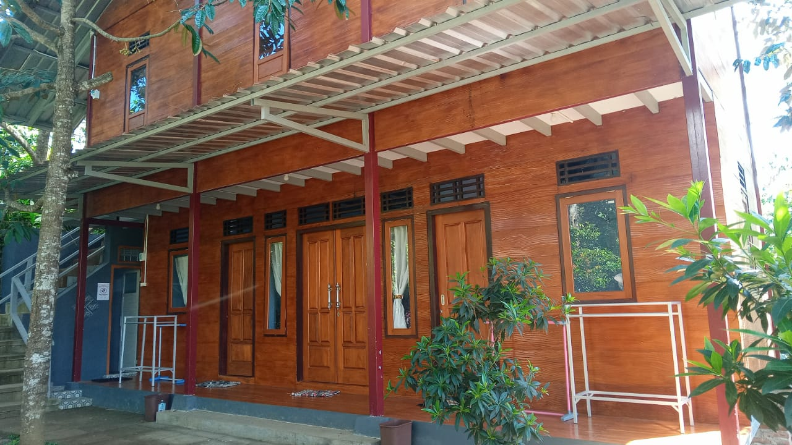

Penginapan
Asriloka Wonosalam menyediakan fasilifas penginapan nyaman dengan konsep ruang kamar tidur khas tradisional Jawa Timur. Dengan view hutan jati yang alami memberikan suasana nyaman dan sejuk.
- Detail Semua
- Janaka
- Griya Arimbi 1
- Griya Arimbi 2
- Graha Dewi Kunti

Janaka | Gambar tampak depan
Terdapat 3 kamar di lantai bawah dan 1 aula pada lantai 2 dengan 2 kamar mandi luar.
Janaka | Gambar tampak depan
Terdapat 3 kamar di lantai bawah dan 1 aula pada lantai 2 dengan 2 kamar mandi luar.
otw foto pov dan detail lain
deskripsii
otw foto pov dan detail lain
deskripsii
Griya Arimbi 1 | Gambar tampak depan
deskripsi arimbi 1
otw foto pov dan detail lain
deskripsii
otw foto pov dan detail lain
deskripsii
Griya Arimbi 2 | Gambar tampak depan
deskripsi arimbi 2
otw foto pov dan detail lain
deskripsii

Graha Dewi Kunti | Gambar tampak depan
deskripsi kunti
otw foto pov dan detail lain
deskripsii